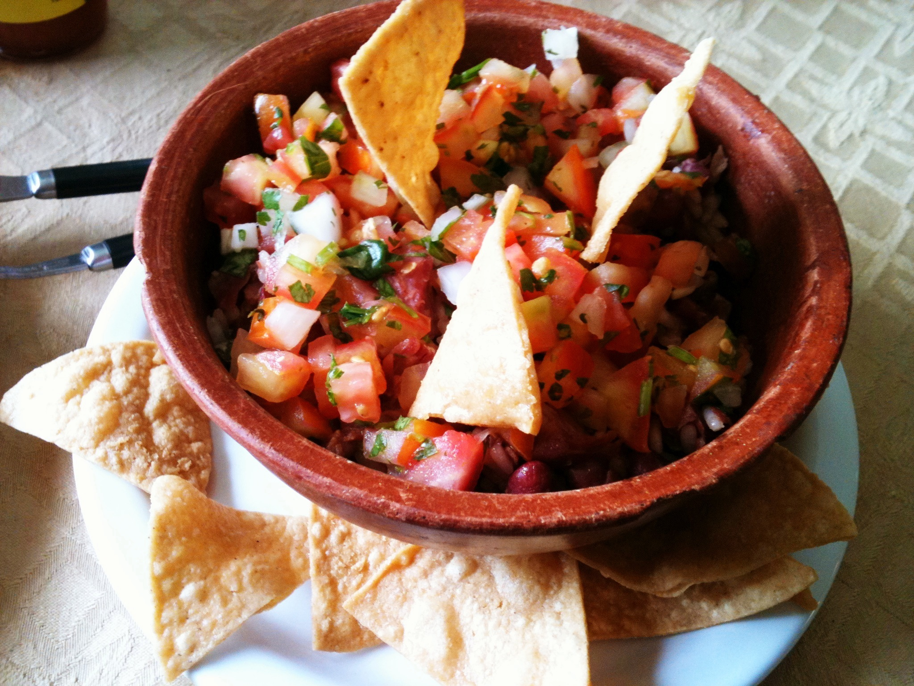

Chifrijo

Description
Chifrijo is a Costa Rican contemporary dish. It is very common in bars
or canteens, as well as in restaurants around Costa Rica. A favorite bar snack
of Los Ticos, chifrijo has its chips and salsa amped up by crispy pork
and a classic Costa Rican condiment Salsa Lizano
Ingredients
- 1/2 cup Costa Rican White Rice, hot
- 1/2 cup Costa Rican red beans (kidney) with broth, hot
- 1/2 cup Costa Rican chicharrones, hot
- 1/4 cup Costa Rican chimichurri (similar to pico de gallo)
- 2 slices ripe avocado (for garnish)
- 4-5 tortilla chips (for garnish)
- lime (for serving)
Steps
- In a bowl, place the white rice. On top, add the beans and with broth
- In the center of the rice and beans mixture, add your chimichurri.
- Then add your pieces of chicharron. Garnish with ripe avocado slices and fried corn tortillas
- Garnish with freshly squeezed lime juice.
- Serve with Salsa Lizano if desired.
For fulll recipe click here
Return to recipes homepage